अध्यायाची किल्ली
अर्जुनाच्या विनंतीवरून भगवान श्रीकृष्ण त्याला आपले विराट, विश्वव्यापी रूप (विश्वरूप) दाखवतात. सुरुवातीला अर्जुन आनंदित होतो, पण नंतर या रूपाचे उग्र, प्रलयंकारी स्वरूप पाहून तो भयभीत होतो. भगवंत स्वतःला 'काळ' (महाकाल) म्हणून ओळख देऊन अर्जुनाला निमित्तमात्र होण्यास सांगतात. अखेर अर्जुनाच्या विनंतीवरून भगवंत आपले पूर्वीचे सौम्य चतुर्भुज व मनुष्यरूप पुन्हा धारण करतात, आणि अनन्य भक्तीनेच आपले खरे स्वरूप जाणता, पाहता व त्यात प्रवेश करता येते असे सांगतात.
खालील ९ भागांत हा संपूर्ण प्रसंग श्लोकानुसार (११.०१ ते ११.५५) मांडला आहे — प्रत्येक श्लोकावर क्लिक करून सोप्या मराठी अर्थाचा तपशील पाहता येईल.
भाग १. अर्जुनाची कृतज्ञता आणि विश्वरूप पाहण्याची विनंती
श्लोक ११.०१ ते ११.०४
अर्जुन
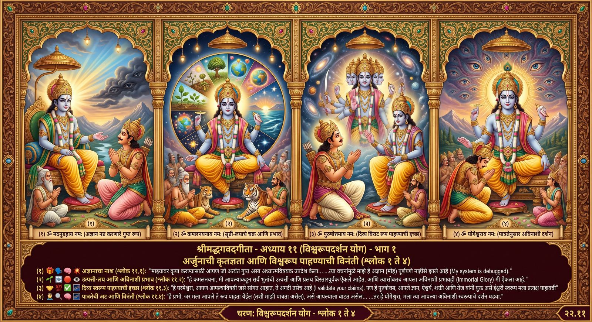
भाग १ · श्लोक ११.०१ ते ११.०४ — चित्रमय अवलोकन
अर्जुन उवाच ।
मदनुग्रहाय परमं गुह्यमध्यात्मसंज्ञितम् ।
यत्त्वयोक्तं वचस्तेन मोहोऽयं विगतो मम ॥ ११-१ ॥
भवाप्ययौ हि भूतानां श्रुतौ विस्तरशो मया ।
त्वत्तः कमलपत्राक्ष माहात्म्यमपि चाव्ययम् ॥ ११-२ ॥
एवमेतद्यथात्थ त्वमात्मानं परमेश्वर ।
द्रष्टुमिच्छामि ते रूपमैश्वरं पुरुषोत्तम ॥ ११-३ ॥
मन्यसे यदि तच्छक्यं मया द्रष्टुमिति प्रभो ।
योगेश्वर ततो मे त्वं दर्शयात्मानमव्ययम् ॥ ११-४ ॥
०१
अर्जुन त्याच्या मनाची स्थिती आणि नाहीसे झालेले अज्ञान याबद्दल सांगतो.
▸
माझ्यावर कृपा करण्यासाठी आपण जो अत्यंत गुप्त अध्यात्मविषयक उपदेश मला केला, त्याने माझे हे अज्ञान नाहीसे झाले.
०२
तसेच कृष्णाच्या विभूती योग आणि अव्ययाचे माहात्म्य याबद्दल सांगतो.
▸
कारण हे कमलदलनयना, मी आपल्याकडून भूतांची उत्पत्ती आणि प्रलय विस्तारपूर्वक ऐकले आहे. तसेच आपला अविनाशी प्रभावही ऐकला आहे.
०३
हे परमेश्वरा, मी आपले दिव्य स्वरूप प्रत्यक्ष पाहायची इच्छा बाळगतो.
▸
हे परमेश्वरा, आपण आपल्याविषयी जसे सांगत आहात, ते बरोबर तसेच आहे. हे पुरुषोत्तमा, आपले ज्ञान, ऐश्वर्य, शक्ती, बल, वीर्य आणि तेज यांनी युक्त ईश्वरी स्वरूप मला प्रत्यक्ष पाहायची इच्छा आहे.
०४
हे प्रभो, आपले अविनाशी स्वरूप मला दाखवा.
▸
हे प्रभो, जर मला आपले ते रूप पाहता येईल असे आपल्याला वाटत असेल, तर हे योगेश्वरा, त्या अविनाशी स्वरूपाचे मला दर्शन घडवा.
भाग २. भगवंतांचे वर्णन आणि दिव्य दृष्टी प्रदान
श्लोक ११.०५ ते ११.०८
श्री भगवान
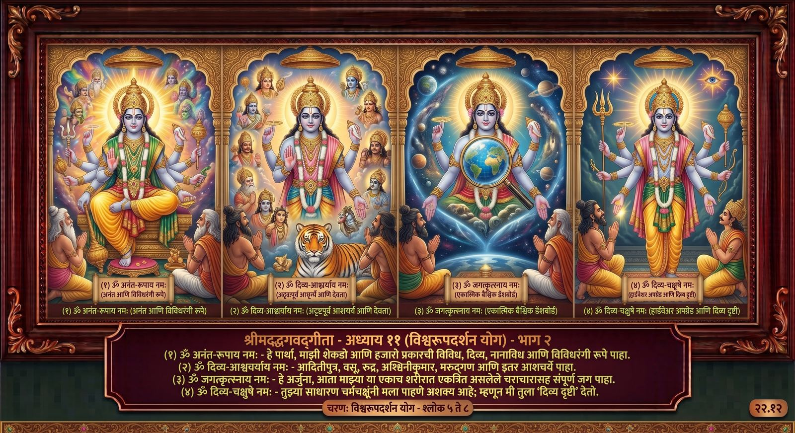
भाग २ · श्लोक ११.०५ ते ११.०८ — चित्रमय अवलोकन
श्रीभगवानुवाच ।
पश्य मे पार्थ रूपाणि शतशोऽथ सहस्रशः ।
नानाविधानि दिव्यानि नानावर्णाकृतीनि च ॥ ११-५ ॥
पश्यादित्यान्वसून्रुद्रानश्विनौ मरुतस्तथा ।
बहून्यदृष्टपूर्वाणि पश्याश्चर्याणि भारत ॥ ११-६ ॥
इहैकस्थं जगत्कृत्स्नं पश्याद्य सचराचरम् ।
मम देहे गुडाकेश यच्चान्यद्द्रष्टुमिच्छसि ॥ ११-७ ॥
न तु मां शक्यसे द्रष्टुमनेनैव स्वचक्षुषा ।
दिव्यं ददामि ते चक्षुः पश्य मे योगमैश्वरम् ॥ ११-८ ॥
०५
हे पार्था, तू माझी विविध रूपे पाहा.
▸
भगवान श्रीकृष्ण म्हणाले, हे पार्था (अर्थात पृथापुत्र अर्जुना), आता तू माझी शेकडो-हजारो नाना प्रकारची, नाना रंगांची आणि नाना आकारांची अलौकिक रूपे पाहा.
०६
हे भारता, तू माझ्यामध्ये विविध देवता आणि आश्चर्यकारक रूपे पाहा.
▸
हे भारता (अर्थात भरतवंशी अर्जुना), माझ्यामध्ये अदितीच्या बारा पुत्रांना, आठ वसूंना, अकरा रुद्रांना, दोन्ही अश्विनीकुमारांना आणि एकोणपन्नास मरुद्गणांना पाहा. तसेच आणखीही पुष्कळशी यापूर्वी न पाहिलेली आश्चर्यकारक रूपे पाहा.
०७
हे अर्जुना, माझ्या शरीरात संपूर्ण जग आणि तुला पाहायची इच्छा असलेले सर्व बघ.
▸
हे अर्जुना, आता या माझ्या शरीरात एकत्रित असलेले चराचरासह संपूर्ण जग पाहा. तसेच इतरही जे काही तुला पाहण्याची इच्छा असेल, ते पाहा.
०८
तू तुझ्या साधारण दृष्टीने मला पाहू शकणार नाहीस, म्हणून मी तुला दिव्य दृष्टी देतो.
▸
परंतु मला तू या तुझ्या चर्मचक्षूंनी खात्रीने पाहू शकणार नाहीस, म्हणून मी तुला दिव्य दृष्टी देतो. तिच्या साहाय्याने तू माझी ईश्वरी योगशक्ती पाहा.
भाग ३. संजयाने केलेले विश्वरूपाचे अद्भुत वर्णन
श्लोक ११.०९ ते ११.१४
संजय
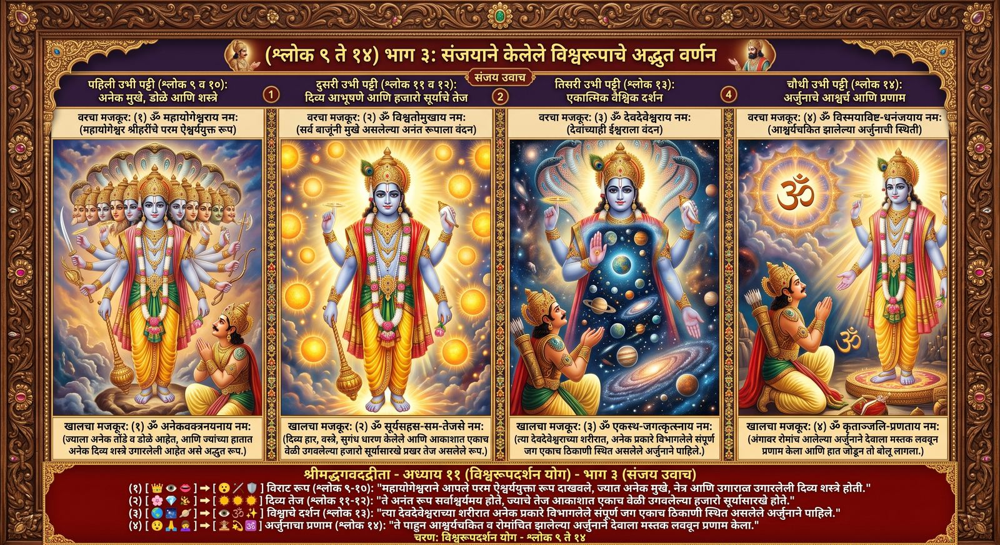
भाग ३ · श्लोक ११.०९ ते ११.१४ — चित्रमय अवलोकन
सञ्जय उवाच ।
एवमुक्त्वा ततो राजन्महायोगेश्वरो हरिः ।
दर्शयामास पार्थाय परमं रूपमैश्वरम् ॥ ११-९ ॥
अनेकवक्त्रनयनमनेकाद्भुतदर्शनम् ।
अनेकदिव्याभरणं दिव्यानेकोद्यतायुधम् ॥ ११-१० ॥
दिव्यमाल्याम्बरधरं दिव्यगन्धानुलेपनम् ।
सर्वाश्चर्यमयं देवमनन्तं विश्वतोमुखम् ॥ ११-११ ॥
दिवि सूर्यसहस्रस्य भवेद्युगपदुत्थिता ।
यदि भाः सदृशी सा स्याद्भासस्तस्य महात्मनः ॥ ११-१२ ॥
तत्रैकस्थं जगत्कृत्स्नं प्रविभक्तमनेकधा ।
अपश्यद्देवदेवस्य शरीरे पाण्डवस्तदा ॥ ११-१३ ॥
ततः स विस्मयाविष्टो हृष्टरोमा धनञ्जयः ।
प्रणम्य शिरसा देवं कृताञ्जलिरभाषत ॥ ११-१४ ॥
०९
संजय म्हणाले, महायोगेश्वर श्रीकृष्णांनी अर्जुनाला परम ऐश्वर्ययुक्त दिव्य स्वरूप दाखविले.
▸
संजय म्हणाले, हे महाराज, महायोगेश्वर आणि सर्व पापांचा नाश करणाऱ्या भगवंतांनी (अर्थात श्रीकृष्णांनी) असे सांगून मग पार्थाला (अर्थात पृथापुत्र अर्जुनाला) परम ऐश्वर्ययुक्त दिव्य स्वरूप दाखविले.
१०
अनेक तोंडे आणि डोळे, आश्चर्यकारक दर्शने, दिव्य अलंकार आणि शस्त्रे.
▸
अनेक तोंडे व डोळे असलेल्या, अनेक आश्चर्यकारक दर्शने असलेल्या, पुष्कळशी दिव्य अलंकारांनी विभूषित आणि पुष्कळशी दिव्य शस्त्रे हातात घेतलेल्या —
११
अर्जुनाने विराटस्वरूप परमेश्वराला पाहिले, त्याच्यावर दिव्य माळा, वस्त्रे आणि गंध होते.
▸
दिव्य माळा आणि वस्त्रे धारण केलेल्या, तसेच दिव्य गंधाने भूषित, सर्व प्रकारच्या आश्चर्यांनी युक्त, अनंतस्वरूप, सर्व बाजूंनी तोंडे असलेल्या विराटस्वरूप परमदेव परमेश्वराला अर्जुनाने पाहिले.
१२
विश्वरूप परमात्म्याच्या प्रकाशाइतका तेजस्वी जो खचितच होणार नाही.
▸
आकाशात हजार सूर्य एकदम उगवले असता जो प्रकाश पडेल, तोही त्या विश्वरूप परमात्म्याच्या प्रकाशाइतका कदाचितच होईल म्हणजे होणार नाही.
१३
अर्जुनाने कृष्णाच्या शरीरात एकत्रित असलेले संपूर्ण जग पाहिले.
▸
पांडवाने (पांडुपुत्र अर्जुनाने) त्यावेळी अनेक प्रकारांत विभागलेले संपूर्ण जग देवाधिदेव भगवान श्रीकृष्णांच्या त्या शरीरात एकत्रित असलेले पाहिले.
१४
अर्जुन आश्चर्यचकित व रोमांच उभे राहून श्रद्धाभक्तीसह प्रणाम करतो.
▸
त्यानंतर तो आश्चर्यचकित झालेला व अंगावर रोमांच उभे राहिलेला धनंजय (अर्थात अर्जुन), प्रकाशमय विश्वरूप परमात्म्याला श्रद्धाभक्तीसह मस्तकाने प्रणाम करून हात जोडून म्हणाला.
भाग ४(अ). अर्जुनाने पाहिलेले भगवंतांचे विराट आणि भव्य स्वरूप
श्लोक ११.१५ ते ११.१८
अर्जुन
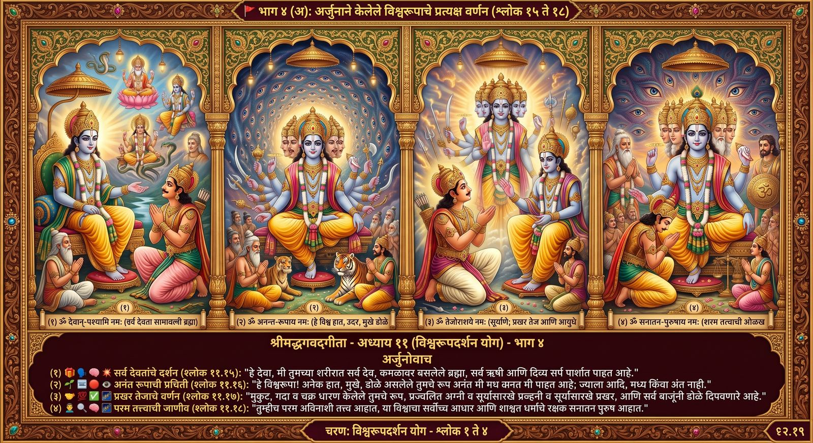
भाग ४(अ) · श्लोक ११.१५ ते ११.१८ — चित्रमय अवलोकन
अर्जुन उवाच ।
पश्यामि देवांस्तव देव देहे सर्वांस्तथा भूतविशेषसङ्घान् ।
ब्रह्माणमीशं कमलासनस्थमृषींश्च सर्वानुरगांश्च दिव्यान् ॥ ११-१५ ॥
अनेकबाहूदरवक्त्रनेत्रं पश्यामि त्वां सर्वतोऽनन्तरूपम् ।
नान्तं न मध्यं न पुनस्तवादिं पश्यामि विश्वेश्वर विश्वरूप ॥ ११-१६ ॥
किरीटिनं गदिनं चक्रिणं च तेजोराशिं सर्वतो दीप्तिमन्तम् ।
पश्यामि त्वां दुर्निरीक्ष्यं समन्ताद्दीप्तानलार्कद्युतिमप्रमेयम् ॥ ११-१७ ॥
त्वमक्षरं परमं वेदितव्यं त्वमस्य विश्वस्य परं निधानम् ।
त्वमव्ययः शाश्वतधर्मगोप्ता सनातनस्त्वं पुरुषो मतो मे ॥ ११-१८ ॥
१५
अर्जुन म्हणाला, आपल्या दिव्य देहात संपूर्ण देव, भूतांचे समुदाय, ब्रह्मदेव, शंकर, ऋषी आणि दिव्य सर्प आहे.
▸
अर्जुन म्हणाला, हे देवा, मी आपल्या दिव्य देहात संपूर्ण देवांना तसेच अनेक भूतांच्या समुदायांना, कमळाच्या आसनावर विराजमान झालेल्या ब्रह्मदेवांना, शंकरांना, सर्व ऋषींना तसेच दिव्य सर्पांना पाहात आहे.
१६
हे विश्वाचे स्वामी, आपल्याला अनेक बाहू, पोटे, तोंडे आणि डोळ्यांसह पाहत आहे. आपल्या ना अंत, ना मध्य, ना आरंभ दिसत.
▸
हे संपूर्ण विश्वाचे स्वामी, मी आपल्याला अनेक बाहू, पोटे, तोंडे आणि डोळे असलेले, तसेच सर्व बाजूंनी अनंत रूपे असलेले पाहात आहे. हे विश्वरूपा, मला आपला ना अंत दिसतो, ना मध्य दिसतो, ना आरंभ.
१७
आपल्याला मुकुट, गदा, चक्र धारण केलेले, तेजस्वी, प्रज्वलित अग्री-सूर्यासारखे, पाहण्यास कठिण, सर्व दृष्टींनी अमर्याद.
▸
मी आपल्याला मुकुट घातलेले, गदा व चक्र धारण केलेले, सर्व बाजूंनी प्रकाशमान तेजाचा समूह असे, प्रज्वलित अग्री व सूर्य यांच्याप्रमाणे तेजाने युक्त, पाहण्यास अतिशय कठीण आणि सर्व दृष्टींनी अमर्याद असे पाहात आहे.
१८
आपणच जाणण्याजोगे परब्रह्म, जगाचे आधार, अनादी धर्माचे रक्षक, अविनाशी सनातन पुरुष आहात.
▸
आपणच जाणण्याजोगे परब्रह्म परमात्मा आहात. आपणच या जगाचे परम आधार आहात. आपणच अनादी धर्माचे रक्षक आहात आणि आपणच अविनाशी सनातन पुरुष आहात, असे मला वाटते.
भाग ४(ब). अर्जुनाने पाहिलेले भगवंतांचे विराट आणि भव्य स्वरूप (उत्तरार्ध)
श्लोक ११.१९ ते ११.२२
अर्जुन
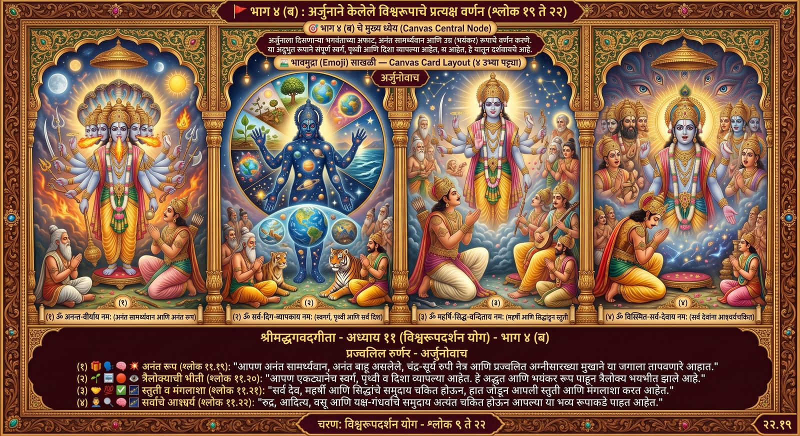
भाग ४(ब) · श्लोक ११.१९ ते ११.२२ — चित्रमय अवलोकन
अनादिमध्यान्तमनन्तवीर्यमनन्तबाहुं शशिसूर्यनेत्रम् ।
पश्यामि त्वां दीप्तहुताशवक्त्रं स्वतेजसा विश्वमिदं तपन्तम् ॥ ११-१९ ॥
द्यावापृथिव्योरिदमन्तरं हि व्याप्तं त्वयैकेन दिशश्च सर्वाः ।
दृष्ट्वाद्भुतं रूपमुग्रं तवेदं लोकत्रयं प्रव्यथितं महात्मन् ॥ ११-२० ॥
अमी हि त्वां सुरसङ्घा विशन्ति केचिद्भीताः प्राञ्जलयो गृणन्ति ।
स्वस्तीत्युक्त्वा महर्षिसिद्धसङ्घाः स्तुवन्ति त्वां स्तुतिभिः पुष्कलाभिः ॥ ११-२१ ॥
रुद्रादित्या वसवो ये च साध्या विश्वेऽश्विनौ मरुतश्चोष्मपाश्च ।
गन्धर्वयक्षासुरसिद्धसङ्घा वीक्षन्ते त्वां विस्मिताश्चैव सर्वे ॥ ११-२२ ॥
१९
आपण अनंत बाहू, चंद्र-सूर्य नेत्र, अग्रीमुख, तेजाने जगाला तापविणारे, असे दिसते.
▸
आपण आदी, मध्य आणि अंत नसलेले, अनंत सामर्थ्याने युक्त, अनंत बाहू असलेले, चंद्र व सूर्य हे ज्यांचे नेत्र आहेत, पेटलेल्या अग्रीसारखे ज्यांचे मुख आहे आणि आपल्या तेजाने या जगाला तापविणारे, असे आहात, असे मला दिसते.
२०
आपण स्वर्ग, पृथ्वी, आकाश व सर्व दिशा व्यापल्या आहेत. तिन्ही लोक आपले अलौकिक रूप पाहून भयभीत आहेत.
▸
हे महात्मन्, हे स्वर्ग आणि पृथ्वी यांच्यामधील आकाश आणि सर्व दिशा फक्त आपण एकट्यानेच व्यापून टाकल्या आहेत. आपले हे अलौकिक आणि भयंकर रूप पाहून तिन्ही लोक अत्यंत भयभीत झाले आहेत.
२१
देवता, भयभीत होऊन, आपली स्तुती करीत आहेत. महर्षी व सिद्ध, मंगलाशा करून उत्तमोत्तम स्तोत्रे म्हणत आहेत.
▸
तेच देवतांचे समुदाय आपल्यात शिरत आहेत आणि काही भयभीत होऊन हात जोडून आपल्या नावांचे व गुणांचे वर्णन करीत आहेत. तसेच महर्षी व सिद्ध यांचे समुदाय, सर्वांचे कल्याण होवो, अशी मंगलाशा करून उत्तमोत्तम स्तोत्रे म्हणून आपली स्तुती करीत आहेत.
२२
रुद्र, आदित्य, वसू, साध्यगण, विश्वेदेव, अश्विनीकुमार, मरुद्गण, पितर, गंधर्व, यक्ष, राक्षस, सिद्ध; सर्व चकित झाले आहेत.
▸
अकरा रुद्र, बारा आदित्य तसेच आठ वसू, साध्यगण, विश्वेदेव, दोन अश्विनीकुमार, मरुद्गण आणि पितरांचे समुदाय, तसेच गंधर्व, यक्ष, राक्षस आणि सिद्धांचे समुदाय आहेत, ते सर्वच चकित होऊन आपल्याकडे पाहात आहेत.
भाग ५(अ). विश्वरूपाचे उग्र व प्रलयंकारी दर्शन आणि अर्जुनाची भीती
श्लोक ११.२३ ते ११.२७
अर्जुन
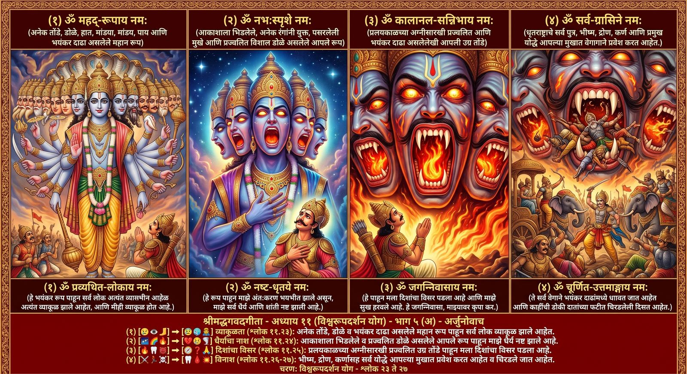
भाग ५(अ) · श्लोक ११.२३ ते ११.२७ — चित्रमय अवलोकन
रूपं महत्ते बहुवक्त्रनेत्रं महाबाहो बहुबाहूरुपादम् ।
बहूदरं बहुदंष्ट्राकरालं दृष्ट्वा लोकाः प्रव्यथितास्तथाहम् ॥ ११-२३ ॥
नभःस्पृशं दीप्तमनेकवर्णं व्यात्ताननं दीप्तविशालनेत्रम् ।
दृष्ट्वा हि त्वां प्रव्यथितान्तरात्मा धृतिं न विन्दामि शमं च विष्णो ॥ ११-२४ ॥
दंष्ट्राकरालानि च ते मुखानि दृष्ट्वैव कालानलसन्निभानि ।
दिशो न जाने न लभे च शर्म प्रसीद देवेश जगन्निवास ॥ ११-२५ ॥
अमी च त्वां धृतराष्ट्रस्य पुत्राः सर्वे सहैवावनिपालसङ्घैः ।
भीष्मो द्रोणः सूतपुत्रस्तथासौ सहास्मदीयैरपि योधमुख्यैः ॥ ११-२६ ॥
वक्त्राणि ते त्वरमाणा विशन्ति दंष्ट्राकरालानि भयानकानि ।
केचिद्विलग्ना दशनान्तरेषु सन्दृश्यन्ते चूर्णितैरुत्तमाङ्गैः ॥ ११-२७ ॥
२३
आपले भयंकर रूप पाहून सर्व लोक व्याकूळ झाले आहेत आणि मीही व्याकूळ होत आहे.
▸
हे महाबाहो, आपले अनेक तोंडे, अनेक डोळे, अनेक हात, मांड्या व पाय असलेले, अनेक पोटांचे आणि अनेक दाढांमुळे अतिशय भयंकर असे महान रूप पाहून सर्व लोक व्याकूळ होत आहेत. तसेच मीही व्याकूळ होत आहे.
२४
आपलं तेजस्वी रूप पाहून माझं धैर्य आणि शांती नाहीशी झाली आहे.
▸
कारण हे विष्णो, आकाशाला जाऊन भिडलेल्या, तेजस्वी, अनेक रंगांनी युक्त, पसरलेली तोंडे व तेजस्वी विशाल डोळे यांनी युक्त अशा आपल्याला पाहून भयभीत झालेले माझे अंतःकरण, माझे धैर्य व शांती नाहीशी झाली आहे.
२५
भयानक रूप पाहून मला दिशा कळेनाशा झाल्या आणि सुख हरपले आहे. देवाधिदेवा कृपा करा.
▸
दाढांमुळे भयानक व प्रलयकाळच्या अग्रीसारखी प्रज्वलित आपली तोंडे पाहून मला दिशा कळेनाशा झाल्या असून माझे सुखही हरपले आहे. म्हणून हे देवाधिदेवा, हे जगन्निवासा, आपण प्रसन्न व्हा.
२६
धृतराष्ट्राचे पुत्र, राजसमुदाय, भीष्म, द्रोणाचार्य, कर्ण आणि आमच्या प्रमुख योद्ध्यांसह आपल्यात प्रवेश करीत आहेत.
▸
ते सर्व धृतराष्ट्राचे पुत्र राजसमुदायासह आपल्यात प्रवेश करीत आहेत आणि पितामह भीष्म, द्रोणाचार्य तसेच तो कर्ण आणि आमच्या बाजूचेही प्रमुख योद्धे सगळेच.
२७
आपल्या भयंकर तोंडात धावत जात आहेत आणि डोकी चिरडलेली दिसत आहेत.
▸
आपल्या दाढांमुळे भयंकर दिसणाऱ्या तोंडात मोठ्या वेगाने धावत जात आहेत आणि किंचित डोकी चिरडलेले आपल्या दातांच्या फटीत अडकलेले दिसत आहेत.
भाग ५(ब). विश्वरूपाचे उग्र व प्रलयंकारी दर्शन आणि अर्जुनाची भीती (उत्तरार्ध)
श्लोक ११.२८ ते ११.३१
अर्जुन
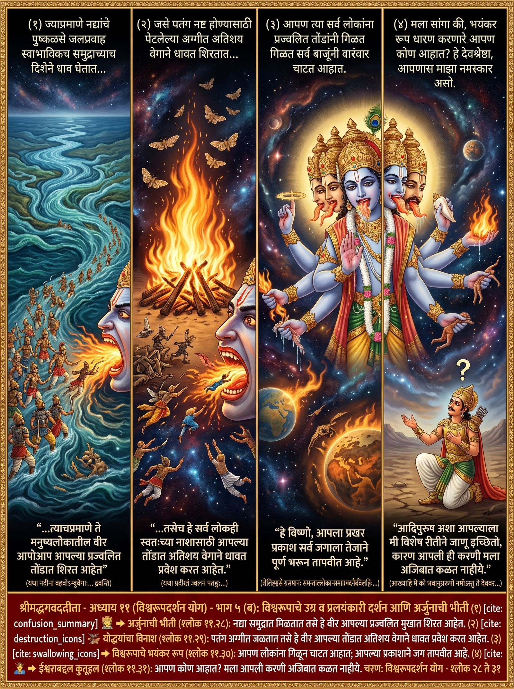
भाग ५(ब) · श्लोक ११.२८ ते ११.३१ — चित्रमय अवलोकन
यथा नदीनां बहवोऽम्बुवेगाः समुद्रमेवाभिमुखा द्रवन्ति ।
तथा तवामी नरलोकवीरा विशन्ति वक्त्राण्यभिविज्वलन्ति ॥ ११-२८ ॥
यथा प्रदीप्तं ज्वलनं पतङ्गा विशन्ति नाशाय समृद्धवेगाः ।
तथैव नाशाय विशन्ति लोकास्तवापि वक्त्राणि समृद्धवेगाः ॥ ११-२९ ॥
लेलिह्यसे ग्रसमानः समन्ताल्लोकान्समग्रान्वदनैर्ज्वलद्भिः ।
तेजोभिरापूर्य जगत्समग्रं भासस्तवोग्राः प्रतपन्ति विष्णो ॥ ११-३० ॥
आख्याहि मे को भवानुग्ररूपो नमोऽस्तु ते देववर प्रसीद ।
विज्ञातुमिच्छामि भवन्तमाद्यं न हि प्रजानामि तव प्रवृत्तिम् ॥ ११-३१ ॥
२८
ज्याप्रमाणे नद्यांचे जलप्रवाह समुद्रात प्रवेश करतात, तसेच वीर आपल्या प्रज्वलित तोंडात शिरत आहेत.
▸
ज्याप्रमाणे नद्यांचे पुष्कळसे जलप्रवाह स्वाभाविकच समुद्राच्याच दिशेने धाव घेतात, त्याचप्रमाणे ते मनुष्यलोकातील वीर आपोआप आपल्या प्रज्वलित तोंडात शिरत आहेत.
२९
पतंग जसे अग्रीत धावतात, तसेच हे लोक आपल्या तोंडात नाशासाठी धावत आहेत.
▸
जसे पतंग नष्ट होण्यासाठी पेटलेल्या अग्रीत अतिशय वेगाने धावत शिरतात, तसेच हे सर्व लोकही स्वतःच्या नाशासाठी आपल्या तोंडात अतिशय वेगाने धावत प्रवेश करीत आहेत.
३०
आपण सर्व लोकांना प्रज्वलित तोंडांनी गिळत आहात. आपला प्रखर प्रकाश जगाला तेजाने भरून तापवीत आहे.
▸
आपण त्या सर्व लोकांना प्रज्वलित तोंडांनी गिळत, सर्व बाजूंनी वारंवार चाटत आहात. हे विष्णो, आपला प्रखर प्रकाश सर्व जगाला तेजाने पूर्ण भरून तापवीत आहे.
३१
आपण कोण आहात? देवश्रेष्ठा, नमस्कार. कृपा करा. आदिपुरुष अशा, आपली करणी कळत नाही.
▸
मला सांगा की, भयंकर रूप धारण करणारे आपण कोण आहात? हे देवश्रेष्ठा, आपणास नमस्कार असो. आपण प्रसन्न व्हा. आदिपुरुष अशा आपल्याला मी विशेष रीतीने जाणू इच्छितो, कारण आपली ही करणी मला अजिबात कळत नाहीये.
भाग ६. कालरूपी भगवंतांचा निर्देश: 'तू केवळ निमित्तमात्र हो'
श्लोक ११.३२ ते ११.३४
श्री भगवान
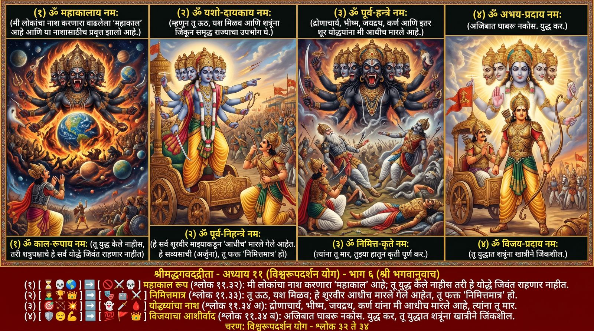
भाग ६ · श्लोक ११.३२ ते ११.३४ — चित्रमय अवलोकन
श्रीभगवानुवाच ।
कालोऽस्मि लोकक्षयकृत्प्रवृद्धो लोकान्समाहर्तुमिह प्रवृत्तः ।
ऋतेऽपि त्वां न भविष्यन्ति सर्वे येऽवस्थिताः प्रत्यनीकेषु योधाः ॥ ११-३२ ॥
तस्मात्त्वमुत्तिष्ठ यशो लभस्व जित्वा शत्रून् भुङ्क्ष्व राज्यं समृद्धम् ।
मयैवैते निहताः पूर्वमेव निमित्तमात्रं भव सव्यसाचिन् ॥ ११-३३ ॥
द्रोणं च भीष्मं च जयद्रथं च कर्णं तथान्यानपि योधवीरान् ।
मया हतांस्त्वं जहि मा व्यथिष्ठा युध्यस्व जेतासि रणे सपत्नान् ॥ ११-३४ ॥
३२
श्रीकृष्ण म्हणाले, मी महाकाल, लोकांचा नाश करणारा आहे. या लोकांच्या नाशासाठी प्रवृत्त झालो आहे. शत्रुपक्षीय सैन्याचे योद्धे तुझ्याशिवायही नष्ट होतील.
▸
भगवान श्रीकृष्ण म्हणाले, मी लोकांचा नाश करणारा वाढलेला महाकाल आहे. या लोकांच्या नाशासाठी मी प्रवृत्त झालो आहे. म्हणून शत्रुपक्षीय सैन्याचे जे योद्धे आहेत, ते सर्व तुझ्याशिवायही राहणार नाहीत, म्हणजेच तू युद्ध केले नाहीस, तरी या सर्वांचा नाश होणार आहे.
३३
ऊठ, यश मिळव, शत्रूंना जिंकून राज्याचा उपभोग घे. हे शूरवीर आधीच मारले गेले आहेत. तू फक्त निमित्तमात्र आहेस.
▸
म्हणूनच तू ऊठ. यश मिळव. शत्रूंना जिंकून धनधान्यसंपन्न राज्याचा उपभोग घे. हे सर्व शूरवीर आधीच माझ्याकडून मारले गेलेले आहेत. हे सव्यसाची अर्जुना, तू फक्त निमित्तमात्र हो.
३४
द्रोणाचार्य, भीष्म, जयद्रथ, कर्ण आणि इतर शूर योद्ध्यांना तू मार. भिऊ नको. युद्धात शत्रूंना खात्रीने जिंकशील.
▸
द्रोणाचार्य आणि पितामह भीष्म तसेच जयद्रथ आणि कर्ण, त्याचप्रमाणे माझ्याकडून मारल्या गेलेल्या इतरही पुष्कळ शूर योद्ध्यांना तू मार. भिऊ नकोस. युद्धात तू खात्रीने शत्रूंना जिंकशील. म्हणून युद्ध कर.
भाग ७(अ). अर्जुनाची स्तुती, क्षमायाचना आणि चतुर्भुज रूपाची विनंती
श्लोक ११.३५ ते ११.४०
संजय / अर्जुन
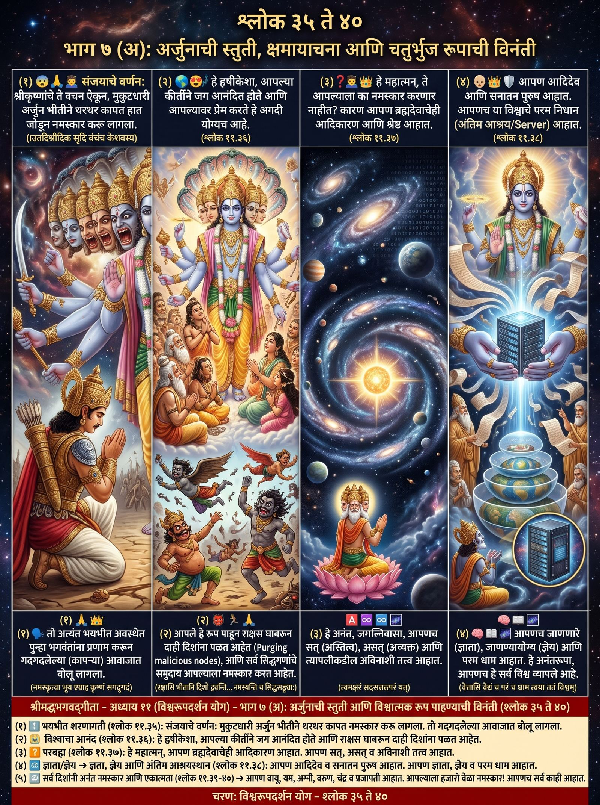
भाग ७(अ) · श्लोक ११.३५ ते ११.४० — चित्रमय अवलोकन
सञ्जय उवाच ।
एतच्छ्रुत्वा वचनं केशवस्य कृताञ्जलिर्वेपमानः किरीटी ।
नमस्कृत्वा भूय एवाह कृष्णं सगद्गदं भीतभीतः प्रणम्य ॥ ११-३५ ॥
अर्जुन उवाच ।
स्थाने हृषीकेश तव प्रकीर्त्या जगत्प्रहृष्यत्यनुरज्यते च ।
रक्षांसि भीतानि दिशो द्रवन्ति सर्वे नमस्यन्ति च सिद्धसङ्घाः ॥ ११-३६ ॥
कस्माच्च ते न नमेरन्महात्मन् गरीयसे ब्रह्मणोऽप्यादिकर्त्रे ।
अनन्त देवेश जगन्निवास त्वमक्षरं सदसत्तत्परं यत् ॥ ११-३७ ॥
त्वमादिदेवः पुरुषः पुराणस्त्वमस्य विश्वस्य परं निधानम् ।
वेत्तासि वेद्यं च परं च धाम त्वया ततं विश्वमनन्तरूप ॥ ११-३८ ॥
वायुर्यमोऽग्निर्वरुणः शशाङ्कः प्रजापतिस्त्वं प्रपितामहश्च ।
नमो नमस्तेऽस्तु सहस्रकृत्वः पुनश्च भूयोऽपि नमो नमस्ते ॥ ११-३९ ॥
नमः पुरस्तादथ पृष्ठतस्ते नमोऽस्तु ते सर्वत एव सर्व ।
अनन्तवीर्यामितविक्रमस्त्वं सर्वं समाप्नोषि ततोऽसि सर्वः ॥ ११-४० ॥
३५
संजय म्हणाले, केशवांचे बोलणे ऐकून अर्जुन नमस्कार करतो व श्रीकृष्णांना सद्गदित होऊन प्रणाम करतो.
▸
संजय म्हणाले, भगवान केशवांचे हे बोलणे ऐकून किरीटी अर्जुनाने हात जोडून कापत कापत नमस्कार केला आणि पुन्हा अत्यंत भयभीत होऊन प्रणाम करून भगवान श्रीकृष्णांना सद्गदित होऊन तो म्हणाला.
३६
अर्जुन म्हणाला, आपले नाव, गुण व प्रभाव वर्णनाने जग आनंदित आहे. राक्षस पळून जातात. सिद्धगण आपल्याला नमस्कार करतात.
▸
अर्जुन म्हणाला, हे अंतर्यामी श्रीकृष्णा, आपले नाव, गुण आणि प्रभाव यांच्या वर्णनाने जग अतिशय आनंदित होते व तुमच्यावर अतिशय प्रेम करू लागते. तसेच भ्यालेले राक्षस दिशादिशांत पळून जात आहेत आणि सर्व सिद्धगणांचे समुदाय आपल्याला नमस्कार करीत आहेत, हे योग्यच होय.
३७
ब्रह्मदेवाचे आदिकारण, आदिकर्ता, सर्वात श्रेष्ठ, अनंता, देवाधिदेव, जगन्निवास, सत्, असत्, त्यापलीकडील अक्षर, सच्चिदानंद ब्रह्म आपणच आहात.
▸
हे महात्मन्, ब्रह्मदेवाचेही आदिकारण तसेच आदिकर्ता आणि सर्वश्रेष्ठ अशा आपल्याला हे नमस्कार का बरे करणार नाहीत? कारण हे अनंता, हे देवाधिदेवा, हे जगन्निवासा, जे सत्, असत् व त्यापलीकडील अक्षर अर्थात सच्चिदानंदघन ब्रह्म आहे, ते आपणच आहात.
३८
आपण आदिदेव, सनातन पुरुष आहात. जगाचे आश्रयस्थान, जग जाणणारे, जाणण्याजोगे, परम धाम आहात. आपण सर्व विश्व व्यापले आहे.
▸
आपण आदिदेव आणि सनातन पुरुष आहात. आपण या जगाचे परम आश्रयस्थान आहात. जग जाणणारेही आपणच व जाणण्याजोगेही आपणच आहात. परम धामही आपणच आहात. हे अनंतरूपा, आपण हे सर्व विश्व व्यापले आहे.
३९
आपण वायू, यमराज, अग्री, वरुण, चंद्र, ब्रह्मदेव आणि ब्रह्मदेवाचे जनक आहात. आपल्याला हजार वेळा नमस्कार. वारंवार नमस्कार.
▸
आपण वायू, यमराज, अग्री, वरुण, चंद्र, प्रजेचे स्वामी ब्रह्मदेव आणि ब्रह्मदेवाचेही जनक आहात. आपल्याला हजार वेळा नमस्कार असो. आपणाला आणखीही वारंवार नमस्कार नमस्कार असो.
४०
आपण अनंत बाहू, चंद्र-सूर्य नेत्र, अग्रीमुख, तेजाने जगाला तापविणारे, असे दिसते.
▸
हे अनंत सामर्थ्यशाली, आपल्याला पुढून व मागूनही नमस्कार. हे सर्वात्मका, आपल्याला सर्व बाजूंनीच नमस्कार असो. कारण अनंत पराक्रमशाली अशा आपण सर्व जग व्यापले आहे. म्हणून आपण सर्वरूप आहात.
भाग ७(ब). अर्जुनाची स्तुती, क्षमायाचना आणि चतुर्भुज रूपाची विनंती (उत्तरार्ध)
श्लोक ११.४१ ते ११.४६
अर्जुन
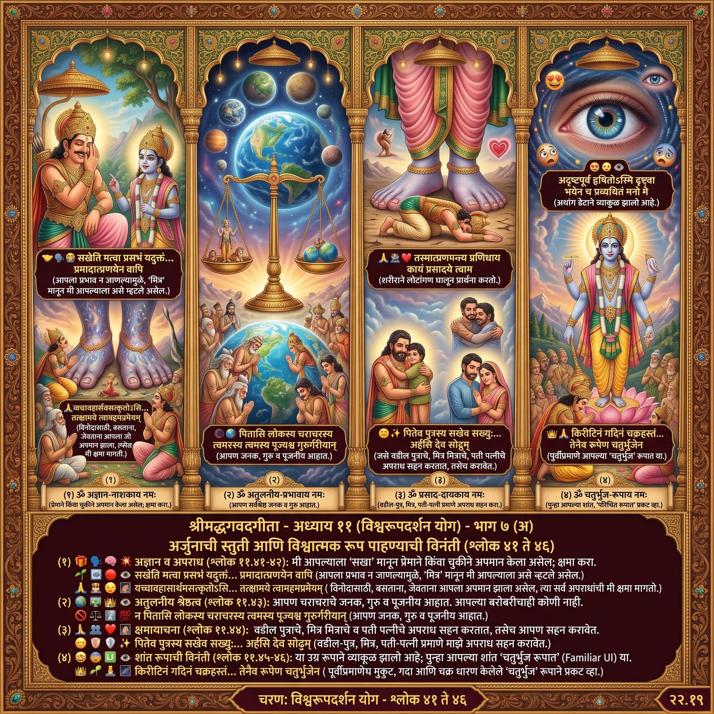
भाग ७(ब) · श्लोक ११.४१ ते ११.४६ — चित्रमय अवलोकन
सखेति मत्वा प्रसभं यदुक्तं हे कृष्ण हे यादव हे सखेति ।
अजानता महिमानं तवेदं मया प्रमादात्प्रणयेन वापि ॥ ११-४१ ॥
यच्चावहासार्थमसत्कृतोऽसि विहारशय्यासनभोजनेषु ।
एकोऽथवाप्यच्युत तत्समक्षं तत्क्षामये त्वामहमप्रमेयम् ॥ ११-४२ ॥
पितासि लोकस्य चराचरस्य त्वमस्य पूज्यश्च गुरुर्गरीयान् ।
न त्वत्समोऽस्त्यभ्यधिकः कुतोऽन्यो लोकत्रयेऽप्यप्रतिमप्रभाव ॥ ११-४३ ॥
तस्मात्प्रणम्य प्रणिधाय कायं प्रसादये त्वामहमीशमीड्यम् ।
पितेव पुत्रस्य सखेव सख्युः प्रियः प्रियायार्हसि देव सोढुम् ॥ ११-४४ ॥
अदृष्टपूर्वं हृषितोऽस्मि दृष्ट्वा भयेन च प्रव्यथितं मनो मे ।
तदेव मे दर्शय देव रूपं प्रसीद देवेश जगन्निवास ॥ ११-४५ ॥
किरीटिनं गदिनं चक्रहस्तमिच्छामि त्वां द्रष्टुमहं तथैव ।
तेनैव रूपेण चतुर्भुजेन सहस्रबाहो भव विश्वमूर्ते ॥ ११-४६ ॥
४१
प्रभाव न जाणवल्यामुळे, मित्र मानून हे कृष्णा, हे यादवा, हे सख्या, असे म्हटले असेल.
▸
आपला हा प्रभाव न जाणवल्यामुळे, आपण माझे मित्र आहात असे मानून प्रेमाने किंवा चुकीने मी हे कृष्णा, हे यादवा, हे सख्या, असे जे काही विचार न करता मुद्दाम म्हटले असेल —
४२
विनोदासाठी, झोपताना, बसल्यावेळी, भोजन करताना केलेला अपमान - त्या सर्व अपराधांसाठी क्षमा मागतो.
▸
हे अच्युता, माझ्याकडून विनोदासाठी, फिरताना, झोपताना, बसल्यावेळी आणि भोजन इत्यादी करताना आपला एकांतात किंवा त्या मित्रांच्या समक्ष जो अपमान झाला असेल, त्या सर्व अपराधांची अचिंत्य प्रभावशाली अशा आपणाकडे मी क्षमा मागत आहे.
४३
आपण चराचर जगताचे जनक, सर्वश्रेष्ठ गुरू, पूजनीय आहात. त्रैलोक्यात आपल्याहून श्रेष्ठ कोणी नाही.
▸
आपण या चराचर जगताचे जनक आहात. तसेच सर्वश्रेष्ठ गुरू व अत्यंत पूजनीय आहात. हे अतुलनीयप्रभावा, त्रैलोक्यात आपल्या बरोबरीचाही दुसरा कोणी नाही. मग आपल्याहून श्रेष्ठ कसा असू शकेल?
४४
आपल्या चरणांवर लोटांगण घालून नमस्कार, प्रार्थना करतो. वडील पुत्राचे, मित्र मित्राचे, पती पत्नीचे अपराध सहन करतात तसेच आपण माझे अपराध सहन केलेत.
▸
म्हणूनच हे प्रभो, मी आपल्या चरणांवर शरीराने लोटांगण घालून नमस्कार करून स्तुत्य अशा आपणास प्रसन्न व्हावे म्हणून प्रार्थना करीत आहे. हे देवा, वडील जसे पुत्राचे, मित्र जसे मित्राचे आणि पती जसे आपल्या प्रियतम पत्नीचे अपराध सहन करतात, तसेच आपणही माझे अपराध सहन करण्यास योग्य आहात.
४५
आपले आश्चर्यकारक रूप पाहून आनंदित झालो, पण भीतीने व्याकूळ आहे. चतुर्भुज विष्णुरूप दाखवा, प्रसन्न व्हा.
▸
पूर्वी न पाहिलेले आपले हे आश्चर्यकारक रूप पाहून मी आनंदित झालो आहे आणि माझे मन भीतीने अतिशय व्याकूळ होत आहे. म्हणून आपण मला ते चतुर्भुज विष्णुरूपच दाखवा. हे देवेशा, हे जगन्निवासा, प्रसन्न व्हा.
४६
आपले मुकुट धारण केलेले, गदा आणि चक्र हातात घेतलेले पहायचे आहे. विश्वस्वरूपा, सहस्रबाहो, चतुर्भुज रूपाने प्रकट व्हा.
▸
मी पहिल्यासारखे आपणाला मुकुट धारण केलेले तसेच गदा आणि चक्र हातात घेतलेले पाहू इच्छितो. म्हणून हे विश्वस्वरूपा, हे सहस्रबाहो, आपण त्याच चतुर्भुज रूपाने प्रकट व्हा.
भाग ८. भगवंतांचे चतुर्भुज व सौम्य दर्शन आणि विश्वरूपाची दुर्लभता
श्लोक ११.४७ ते ११.५०
श्री भगवान / संजय
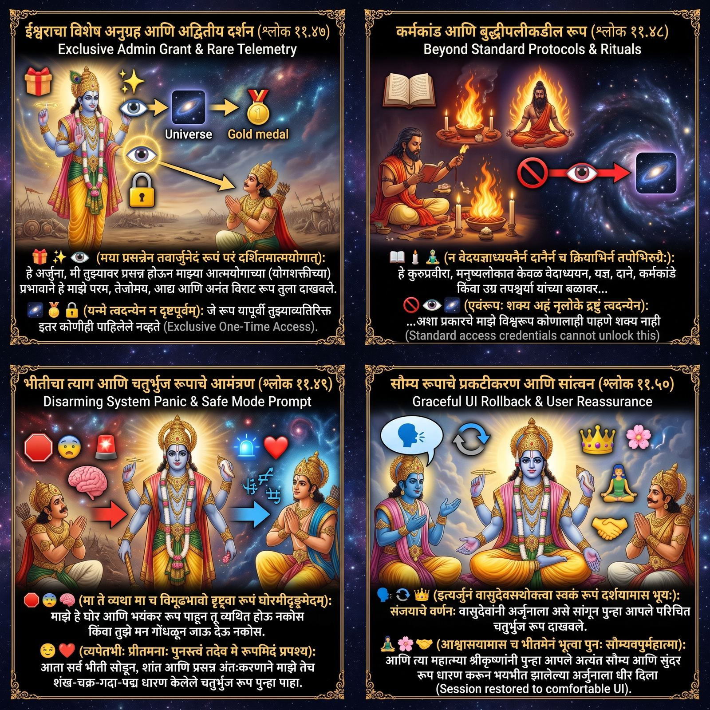
भाग ८ · श्लोक ११.४७ ते ११.५० — चित्रमय अवलोकन
श्रीभगवानुवाच ।
मया प्रसन्नेन तवार्जुनेदं रूपं परं दर्शितमात्मयोगात् ।
तेजोमयं विश्वमनन्तमाद्यं यन्मे त्वदन्येन न दृष्टपूर्वम् ॥ ११-४७ ॥
न वेदयज्ञाध्ययनैर्न दानैर्न च क्रियाभिर्न तपोभिरुग्रैः ।
एवंरूपः शक्य अहं नृलोके द्रष्टुं त्वदन्येन कुरुप्रवीर ॥ ११-४८ ॥
मा ते व्यथा मा च विमूढभावो दृष्ट्वा रूपं घोरमीदृङ्ममेदम् ।
व्यपेतभीः प्रीतमनाः पुनस्त्वं तदेव मे रूपमिदं प्रपश्य ॥ ११-४९ ॥
सञ्जय उवाच ।
इत्यर्जुनं वासुदेवस्तथोक्त्वा स्वकं रूपं दर्शयामास भूयः ।
आश्वासयामास च भीतमेनं भूत्वा पुनः सौम्यवपुर्महात्मा ॥ ११-५० ॥
४७
श्रीकृष्ण म्हणाले, योगशक्तीच्या प्रभावाने तुझ्यावर अनुग्रह करण्यासाठी परम तेजोमय विराट रूप दाखविले. ते तुलाच दाखविले, दुसऱ्याने पाहिले नव्हते.
▸
भगवान श्रीकृष्ण म्हणाले, हे अर्जुना, मी तुझ्यावर अनुग्रह करण्यासाठी आपल्या योगशक्तीच्या (आत्मयोगाच्या) प्रभावाने हे माझे परम, तेजोमय, आद्य आणि अनंत विराट रूप तुला दाखविले. जे रूप यापूर्वी तुझ्याव्यतिरिक्त इतर कोणीही पाहिलेले नव्हते.
४८
अर्जुना, मानवलोकात असे विश्वरूप वेदांच्या, यज्ञांच्या अध्ययनाने, दानाने, वैदिक कर्मांनी वा तपश्चर्यांनी तुझ्याखेरीज दुसऱ्याने पाहिला जाणे शक्य नाही.
▸
हे कुरुप्रवीरा, मनुष्यलोकात केवळ वेदाध्ययन, यज्ञ, दाने, कर्मकांडे किंवा उग्र तपश्चर्या यांच्या बळावर असे प्रकारचे माझे विश्वरूप कोणालाही पाहणे शक्य नाही. असे रूप तुझ्याव्यतिरिक्त इतर कोणालाही मनुष्यलोकात पाहणे शक्य नाही.
४९
माझं भयंकर रूप पाहून भयभीत वा गोंधळून जाऊ नकोस. भीती सोडून, प्रीतियुक्त अंतःकरणाने शंख-चक्र-गदा-पद्म धारण केलेलं चतुर्भुज रूप पाह.
▸
माझे हे भयंकर रूप पाहून तू भयभीत होऊ नकोस किंवा गोंधळून जाऊ नकोस. तू भीती सोडून व प्रीतियुक्त अंतःकरणाने तेच माझे शंख-चक्र-गदा-पद्म धारण केलेले चतुर्भुज रूप पुन्हा पाहा.
५०
संजय म्हणाले, वासुदेवांनी अर्जुनाला सांगून चतुर्भुज रूप दाखविले आणि श्रीकृष्णांनी सौम्य रूप धारण करून अर्जुनाला धीर दिला.
▸
संजय म्हणाले, भगवान वासुदेवांनी अर्जुनाला असे सांगून पुन्हा तसलेच आपले चतुर्भुज रूप दाखविले आणि पुन्हा महात्म्या श्रीकृष्णांनी सौम्य रूप धारण करून भयभीत झालेल्या अर्जुनाला धीर दिला.
भाग ९. विश्वरूप दर्शनाचे अंतिम रहस्य: अनन्य भक्ती
श्लोक ११.५१ ते ११.५५
अर्जुन / श्री भगवान
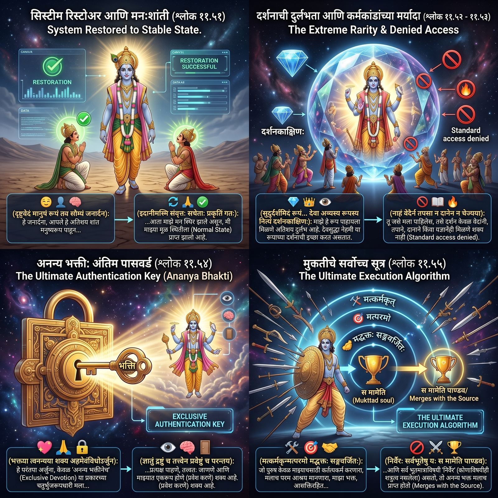
भाग ९ · श्लोक ११.५१ ते ११.५५ — चित्रमय अवलोकन
अर्जुन उवाच ।
दृष्ट्वेदं मानुषं रूपं तव सौम्यं जनार्दन ।
इदानीमस्मि संवृत्तः सचेताः प्रकृतिं गतः ॥ ११-५१ ॥
श्रीभगवानुवाच ।
सुदुर्दर्शमिदं रूपं दृष्टवानसि यन्मम ।
देवा अप्यस्य रूपस्य नित्यं दर्शनकाङ्क्षिणः ॥ ११-५२ ॥
नाहं वेदैर्न तपसा न दानेन न चेज्यया ।
शक्य एवंविधो द्रष्टुं दृष्टवानसि मां यथा ॥ ११-५३ ॥
भक्त्या त्वनन्यया शक्य अहमेवंविधोऽर्जुन ।
ज्ञातुं द्रष्टुं च तत्त्वेन प्रवेष्टुं च परन्तप ॥ ११-५४ ॥
मत्कर्मकृन्मत्परमो मद्भक्तः सङ्गवर्जितः ।
निर्वैरः सर्वभूतेषु यः स मामेति पाण्डव ॥ ११-५५ ॥
५१
अर्जुन म्हणाला, जनार्दना, आपले मनुष्यरूप पाहून माझं मन स्थिर आहे आणि मी मूळ स्थितीत परतलो.
▸
अर्जुन म्हणाला, हे जनार्दना, आपले हे अतिशय शांत मनुष्यरूप पाहून आता माझे मन स्थिर झाले असून मी माझ्या मूळ स्थितीला प्राप्त झालो आहे.
५२
श्रीकृष्ण म्हणाले, माझं चतुर्भुज रूप पाहावं, हे अतिशय दुर्लभ आहे. देवसुद्धा या रूपाचं दर्शन करू इच्छितात.
▸
भगवान श्रीकृष्ण म्हणाले, माझे जे चतुर्भुज रूप तू पाहिलेस, ते पाहावयास मिळणे अतिशय दुर्लभ आहे. देवसुद्धा नेहमी या रूपाच्या दर्शनाची इच्छा करीत असतात.
५३
माझं चतुर्भुज रूप तुझ्यासारखं पाहणं वेदांनी, तप, दान, यज्ञांनी शक्य नाही.
▸
तू जसे मला पाहिलेस, तशा माझ्या चतुर्भुज रूपाचे दर्शन वेदांनी, तपाने, दानाने आणि यज्ञानेही मिळणे शक्य नाही.
५४
परंतु हे परंतप अर्जुना, अनन्य भक्तीने माझं चतुर्भुज रूप प्रत्यक्ष पाहणे, तत्त्वतः जाणणे व माझ्यात एकरूप होणे शक्य आहे.
▸
परंतु हे परंतप (अर्थात शत्रुतापन) अर्जुना, अनन्य भक्तीने या प्रकारच्या चतुर्भुजरूपधारी मला प्रत्यक्ष पाहणे, तत्त्वतः जाणणे तसेच (माझ्यात) प्रवेश करणे अर्थात (माझ्याशी) एकरूप होणेही शक्य आहे.
५५
हे पांडुपुत्र अर्जुना, जो पुरुष मलाच परम आश्रय मानतो, आसक्तिरहित माझा भक्त असतो, सर्व जीवांविषयी निर्वैर असतो, तो मलाच प्राप्त होतो.
▸
हे पांडवा (अर्थात पांडुपुत्र अर्जुना), जो पुरुष केवळ माझ्यासाठी सर्व कर्तव्यकर्म करणारा, मलाच परम आश्रय मानणारा, माझा भक्त, आसक्तिरहित आणि सर्व जीवांविषयी निर्वैर (कोणाविषयीही शत्रुत्व नसलेला) असतो, तो अनन्य भक्त मलाच प्राप्त होतो.